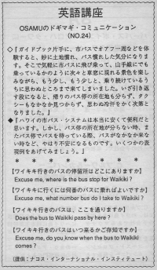

ワイキキ行きのバス停はどこですか。
Once Osamu got around Oahu by using a guide book. He got used to using the bus and became familiar with certain places. He happily got on the bus and enjoyed the scenery from the window. He wanted to see more of Oahu so he kept riding the bus. He felt comfortable like he was in Japan enjoying the train. He lost track of time and place and found that he was in an unfamiliar area. He couldn't find a bus stop or a taxi to take him back. He broke out in a cold sweat.Usually, the bus drivers will be helpful to lost people. They will tell you when to get off, where to transfer or what bus to take. The bus is sometimes noisy so you have to speak loudly and clearly in order for the driver to hear you.
ガイドブック片手に、市バスでオアフ一周などを体験すると、妙に土地慣れ、バス慣れした気分になります。そこで気軽に市バスに飛び乗って、山手線にでも乗っているかのように次々と車窓に現われる景色を楽しみながら、もう少し、もう少しと、乗り続けているうちに思わぬところまで来てしまいました。いざ引き返す段になると、帰りのバス停の所在地も分からず、タクシーもなかなか見つからず、思わぬ冷汗をかく次第となりました。
ハワイの市バス・システムは本当に安くて便利だと思います。しかし、バス停の所在地が分からない時、またバス停でバスを待っている際、バスがなかなか来ない時など、やはり不安になるものです。いくつかの表現例をあげてみましょう。
ワイキキ行きのバスの停留所はどこにありますか。
Excuse me, where is the bus stop for Waikiki?
ワイキキに行くには何番のバスに乗ればよいですか。
Excuse me, what number bus do I take to Waikiki?
ワイキキ行きのバスは、ここを通りますか。
Does the bus to Waikiki pass by here?
ワイキキ行きのバスはいつ来るかご存知ですか。
Excuse me, do you know when the bus to Waikiki comes?

| © 1995-2013 NACOS International Institute. All Rights Reserved. |